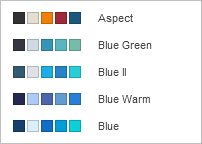

Promena šeme boja
Šeme boja se primenjuju na celu prezentaciju. U Uređivaču prezentacija možete brzo promeniti izgled svoje prezentacije jer one definišu paletu Boje teme za različite elemente prezentacije (objekte, tabele, automatske oblike, grafikone). Ako ste primenili neke Boje teme na elemente prezentacije, a zatim izaberete drugu Šemu boja, primenjene boje u vašoj prezentaciji će se odgovarajuće promeniti.
Da biste promenili šemu boja, kliknite na strelicu nadole pored ikone Šema boja na kartici Raspored gornje trake sa alatkama i izaberite potrebnu šemu boja sa liste: Aspect, Blue Green, Blue II, Blue Warm, Blue, Grayscale, Green Yellow, Green, Marquee, Median, Office 2007-2010, Office 2013-2022, Office, Orange Red, Orange, Paper, Red Orange, Red Violet, Red, Slipstream, Violet II, Violet, Yellow Orange, Yellow i New Office. Izabrana šema boja biće istaknuta na listi.

Kada izaberete željenu šemu boja, možete izabrati druge boje u prozoru sa paletama boja koji odgovara elementu prezentacije na koji želite da primenite boju. Za većinu elemenata prezentacije, prozor sa paletama boja može se otvoriti klikom na obojeno polje na desnoj bočnoj traci kada je izabrani element označen. Za font, ovaj prozor se može otvoriti pomoću strelice nadole pored ikone Boja fonta na kartici Početna gornje trake sa alatkama. Dostupne su sledeće palete:

- Boje teme – boje koje odgovaraju izabranoj šemi boja prezentacije.
- Standardne boje – skup podrazumevanih boja. Izabrana šema boja ne utiče na njih.
-
Takođe možete primeniti prilagođenu boju koristeći dve različite opcije:
- Pipeta – koristite ovu opciju da biste izabrali potrebnu boju klikom na nju u prezentaciji.
-
Više boja – kliknite na ovaj natpis ako potrebna boja ne postoji među dostupnim paletama. Izaberite potreban raspon boja pomeranjem vertikalnog klizača boja i podesite konkretnu boju povlačenjem birača boja unutar velikog kvadratnog polja za boje. Kada izaberete boju pomoću birača boja, odgovarajuće RGB i sRGB vrednosti boja biće prikazane u poljima sa desne strane. Takođe možete definisati boju na osnovu RGB modela boja unosom odgovarajućih numeričkih vrednosti u polja R, G, B (crvena, zelena, plava) ili unosom sRGB heksadecimalnog koda u polje označeno znakom #. Izabrana boja se prikazuje u polju za pregled Novo. Ako je objekat prethodno bio popunjen nekom prilagođenom bojom, ta boja će biti prikazana u polju Trenutno kako biste mogli da uporedite originalnu i izmenjenu boju. Kada je boja definisana, kliknite na dugme Dodaj:

Prilagođena boja će biti primenjena na izabrani element i dodata u paletu Nedavne boje.